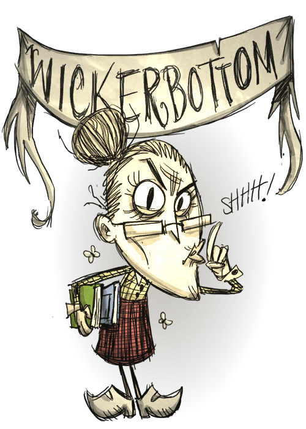

150 250 150
她是个图书馆理员和作者 (可能还是一个书商!), 她更能使用科学名字来说出很多不同的动植物名称. 薇克巴顿 可以在不造出科学机器(一级科技) 的情况下,做出所有在当中可以解锁的物品,但同时在她做出这些物品时没法得到15点理智值(其他角色解锁一项物品或使用蓝图时会得到15点理智),因为她在游戏开始时已经有这些知识了。其余的物品透过科学机器(一级科技) 就可以建造了,所以她可以不用建造炼金仪器（二级科技）。
开局自带两张芦苇纸，可用来制作书籍从而施展5种魔法（1、召唤整个屏幕的鸟。2、使周围植物快速生长。3、使周围生物睡眠。4、召唤一大片的闪电。5、召唤出几条触手），施展魔法会降低一些精神度。失眠症患者，不能睡觉来回复精神。 她在进食变坏的食物时亦会受到大量的理智扣减。